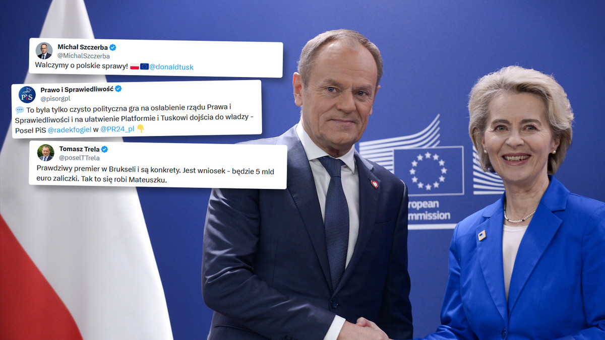

Tkaczyk News
SERWIS INFORMACYJNY
Pieniądze z KPO dla Polski
Niektórzy sądzą, że to wielkie osiągnięcie, wyraz efektywności działań rządu Donalda Tuska i rezultat pracy Adama Bodnara, ministra sprawiedliwości. Inni utrzymują, że to świadectwo nacisków ze strony Komisji Europejskiej na Polskę. Na platformach społecznościowych pojawiła się fala komentarzy polityków, którzy wyrażają swoje zdanie na temat zapowiedzi Ursuli von der Leyen dotyczącej odblokowania środków z KPO. Zdania są naprawdę różne, pojawiają się mocne słowa krytyki mówiące nawet o sprzedaży Polski, ja nie chcę się w tę narrację mieszać dlatego pozwólcie, że mój materiał będzie wolny od polityki- skupimy się tylko na faktach, co się stanie oraz jakie mogą być tego następstwa zarówno pozytywne jak i negatywne. Zacznijmy od tego co obserwujemy już teraz. Stało się to co obserwatorzy rynkowi zakładali już od dłuższego czasu, wraz z perspektywą przyznania Polsce funduszy z KPO złotówka systematycznie zaczęła się umacniać. Wynika to przede wszystkim z możliwości inwestycyjnych, które zwiększają popyt na złotówkę. Nasza waluta staje się coraz bardziej pożądaną głównie z uwagi na inwestycyjne potrzeby rynkowe. Prawdopodobnie złotówka w najbliższych tygodniach i miesiącach będzie się dalej umacniać jeśli po drodze nie wydarzą się nieoczekiwane niepożądane zjawiska, jak np. to z rakietą w Przewodowie czy wojną na Ukrainie. Co natomiast realnie powstanie w ramach KPO i jakie największe korzyści mogą z tego programu płynąć? Jak czytamy na stronie rządowej poświęconej programowi ,,Pieniądze wydatkowane w ramach KPO przeznaczone będą na realizację nowych inwestycji w różnych sektorach gospodarki, w tym na innowacje, transformację klimatyczną, środowisko, cyfryzację, edukację, zdrowie, rynek pracy. Celem strategicznym KPO jest odbudowa potencjału rozwojowego gospodarki utraconego w wyniku pandemii oraz wsparcie budowy trwałej konkurencyjności gospodarki i wzrost poziomu życia społeczeństwa w dłuższym horyzoncie czasowym.” Wymienianie wszystkich projektów w ramach KPO trwałoby zbyt długo, pełną listę znajdziecie w linku w opisie, ja skrócę ją dla was do najważniejszych według mnie jej elementów, które w głównym stopniu mogą wpłynąć na nasz kraj.
28.02.2024, 14:22